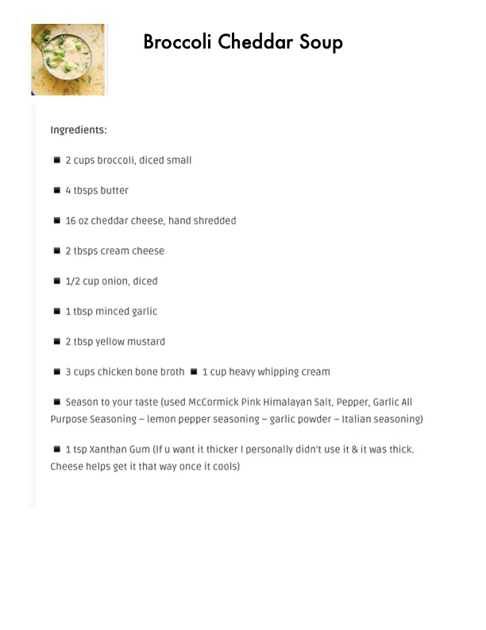

Broccoli Cheddar Soup

Original cookbook page 499
Ingredients
- @ 2cups broccoli, diced small
- @ 4 tbsps butter
- @ 16 oz cheddar cheese, hand shredded
- @ 2 tbsps cream cheese
- @ 1/2 cup onion, diced
- m@ 1 tbsp minced garlic
- @ 2 tbsp yellow mustard
- @ 3 cups chicken bone broth @ 1 cup heavy whipping cream
- @ Season to your taste (used McCormick Pink Himalayan Salt, Pep
- Purpose Seasoning - lemon pepper seasoning — garlic powder - Ita
- @ 1 tsp Xanthan Gum (If u want it thicker I personally didn't use it 5
- Cheese helps get it that way once it cools)
Instructions
- @ Season to your taste (used McCormick Pink Himalayan Salt, Pepper, Garlic All Purpose Seasoning — lemon pepper seasoning — garlic powder — Italian seasoning)
- Cheese helps get it that way once it cools)
Recipe #499 from collection